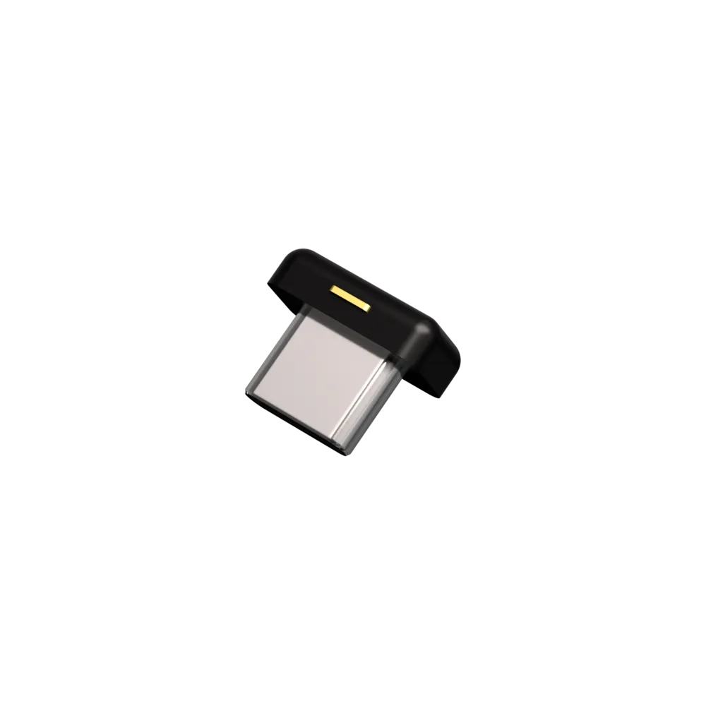
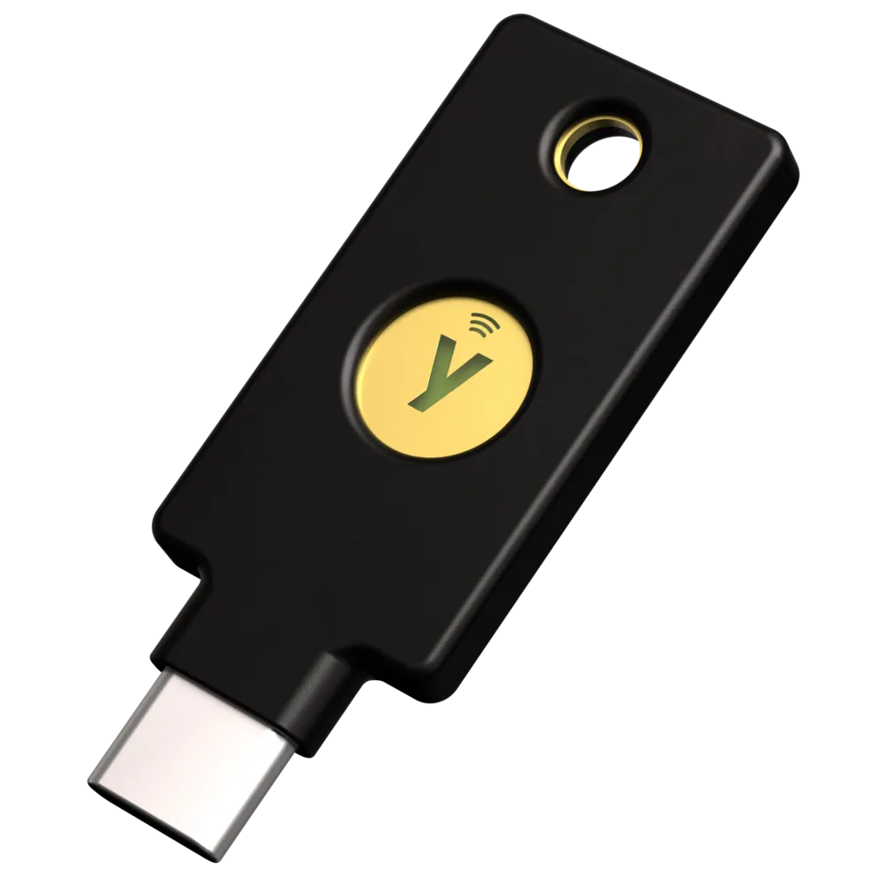

YubiKey Leitfaden
Installation & Verwendung
Basierend auf Dr. Duh's YubiKey Guide

YubiKey 5C Nano

YubiKey 5C NFC
Agenda
- Neuen Key installieren
- GPG Zertifikat
- SSH per GPG einrichten
- ZEIT Dienste mit Yubikey authentifizieren
- TOTP, Password Store
GPG Schlüsselverwaltung
Main Key ∞
💿 Live-CD
💾 USB-Sticks
🏡 Sicher
🚫🌐 Offline
Stufe 7
→
Subkeys ⏰
💻 IT-Rechner
🔐 YubiKey
✅ SSH/Git/GPG
Widerrufbar
7 Sicherheitsstufen
Erforderliche Software
Diese Tools vor dem Start installieren:
# Homebrew (macOS)
brew install gnupg yubikey-personalization ykman pinentry-mac
# Debian/Ubuntu
apt-get install gnupg2 yubikey-personalization scdaemon
# Installation überprüfen
gpg --version
ykman --version
YubiKey Manager (ykman)
Das primäre Tool zur Verwaltung Ihres YubiKeys:
# YubiKey-Erkennung prüfen
ykman list
# Geräteinformationen anzeigen
ykman info
# Firmware-Version prüfen
ykman info | grep Firmware
Ersteinrichtung - Schritt 1
Standard-PINs ändern
Der YubiKey wird mit Standard-PINs ausgeliefert, die unbedingt geändert werden müssen:
# Benutzer-PIN ändern (Standard: 123456)
gpg --card-edit
> admin
> passwd
> 1 # PIN ändern
# Admin-PIN ändern (Standard: 12345678)
> 3 # Admin-PIN ändern
> q
# PIN-Versuche auf 5 erhöhen
ykman openpgp access set-retries 5 5 5 -f -a $ADMIN_PIN
📖 Mehr Details: Change PIN
Ersteinrichtung - Schritt 2
Karteninformationen festlegen
gpg --card-edit
> admin
> name # Karteninhaber-Name festlegen
> lang # Sprachpräferenz festlegen (z.B. de)
> login # Login-E-Mail festlegen
> quit
GPG-Schlüssel generieren
Option 1: Schlüssel auf YubiKey generieren (ich habe Option 2 gewählt)
gpg --card-edit
> admin
> generate
# Eingabeaufforderungen folgen:
# - Gültigkeitsdauer des Schlüssels
# - Echter Name
# - E-Mail-Adresse
Vorteil: Schlüssel existieren niemals außerhalb des YubiKey
Nachteil: Können nicht gesichert werden
GPG-Schlüssel generieren
Option 2: Schlüssel auf Computer generieren, auf YubiKey übertragen (verkürzte Darstellung)
# Master-Schlüssel generieren
gpg --full-generate-key
# Unterschlüssel für Signierung, Verschlüsselung, Authentifizierung erstellen
gpg --edit-key IHRE_KEY_ID
> addkey
# Auf YubiKey übertragen
> keytocard
Vorteil: Schlüssel können gesichert werden
Nachteil: Schlüssel temporär auf Computer
📖 Mehr Details (so habe ich es gemacht): Create Certify key | Create Subkeys | Verify keys | Backup keys | Export public key | Transfer subkeys
Schlüsseltypen & Verwendung
| Schlüsseltyp | Zweck | YubiKey-Slot |
|---|---|---|
| Signatur | Commits, E-Mails signieren | Slot 1 |
| Verschlüsselung | Nachrichten entschlüsseln | Slot 2 |
| Authentifizierung | SSH-Login | Slot 3 |
SSH-Authentifizierung konfigurieren
SSH-Unterstützung aktivieren
# Zu ~/.gnupg/gpg-agent.conf hinzufügen
enable-ssh-support
# Agent neu starten
gpgconf --kill gpg-agent
gpgconf --launch gpg-agent
# Zu Shell-Profil hinzufügen (~/.bashrc oder ~/.zshrc)
export SSH_AUTH_SOCK=$(gpgconf --list-dirs agent-ssh-socket)
SSH Public Key exportieren
# Authentifizierungs-Unterschlüssel als SSH Public Key exportieren
gpg --export-ssh-key IHRE_EMAIL > ~/.ssh/yubikey.pub
# Auf Remote-Server kopieren
ssh-copy-id -i ~/.ssh/yubikey.pub user@remote-host
# Oder manuell zu ~/.ssh/authorized_keys hinzufügen
Git Commit Signierung
Git konfigurieren
# GPG-Schlüssel für Signierung festlegen
git config --global user.signingkey IHRE_KEY_ID
# Automatische Signierung aktivieren
git config --global commit.gpgsign true
# GPG-Programm festlegen
git config --global gpg.program gpg
Commits signieren
git commit -S -m "Signierter Commit"
Alles funktioniert testen
GPG-Karte testen
gpg --card-status
SSH testen
ssh-add -L # Schlüssel auflisten
ssh user@host # Verbindung testen (YubiKey berühren wenn aufgefordert)
Signierung testen
echo "test" | gpg --clearsign
Tägliche Verwendung
YubiKey-Berührungsanforderungen
Bei der Durchführung von Operationen sehen Sie:
- 💡 YubiKey LED blinkt - Berührung erforderlich
- Physische Berührung des Schlüssels innerhalb des Timeout-Fensters erforderlich
- Bestätigt physische Anwesenheit
Häufige Operationen
- SSH-Login → Schlüssel einstecken + berühren
- Git Commit-Signierung → Schlüssel einstecken + berühren
- E-Mail-Entschlüsselung → Schlüssel einstecken + PIN + berühren
Best Practices
🔑 Backup YubiKey kaufen
- Gleiche Konfiguration wie primärer Schlüssel
- Sicher an anderem Ort aufbewahren
📝 Widerrufszertifikat aufbewahren
- Wird bei Schlüsselerstellung generiert
- An sicherem Ort aufbewahren
🔒 PINs sichern
- Starke, einzigartige PINs verwenden
- In Passwort-Manager speichern
🛡️ Regelmäßige Tests
- Backup-Schlüssel regelmäßig testen
- Zugriff auf kritische Konten verifizieren
Fehlerbehebung
YubiKey wird nicht erkannt
# GPG-Agent neu starten
gpgconf --kill gpg-agent
# USB-Verbindung prüfen
ykman list
# Berechtigungen prüfen (Linux)
ls -la /dev | grep usb
Fehlerbehebung
SSH funktioniert nicht
# SSH_AUTH_SOCK überprüfen
echo $SSH_AUTH_SOCK
# Prüfen ob GPG-Agent läuft
gpgconf --list-dirs agent-ssh-socket
# Agent neu starten
gpgconf --kill gpg-agent
source ~/.bashrc # oder ~/.zshrc
PIN gesperrt
Wenn PIN 3-mal falsch eingegeben wurde, mit Admin-PIN entsperren.
Sicherheitsüberlegungen
- YubiKey-Besitzer hat Zugriff auf alle Dienste
- PIN-Schutz immer verwenden
- Verlorene Geräte sofort melden
- Backup-YubiKey mit gleichen Schlüsseln aufbewahren
- Widerrufszertifikat sicher speichern
- Wiederherstellungsverfahren dokumentieren
- Firmware-Authentizität überprüfen
- Nur bei autorisierten Händlern kaufen
Erweiterte Funktionen
FIDO2/U2F für Webseiten
- Keine Einrichtung für die meisten Seiten erforderlich
- Registrierung bei: GitHub, Google, Facebook, Microsoft, etc.
- Einstellungen → Sicherheit → 2FA → Sicherheitsschlüssel
- Microsoft: mysignins.microsoft.com → Sicherheitsinfo → Sicherheitsschlüssel (FIDO2/WebAuthn)
PIV/Smart Card
- Für Windows-Login verwenden
- Unternehmens-VPN-Zugriff
- Zertifikatbasierte Authentifizierung
OATH-TOTP
- TOTP-Secrets auf YubiKey speichern
- Ersetzt Authenticator-Apps
Ressourcen
📚 Dokumentation
🛠️ Tools
💬 Community
- r/yubikey auf Reddit
- Yubico Forum
Schnellreferenz
# Kartenstatus
gpg --card-status
# PIN ändern
gpg --card-edit > passwd
# Schlüssel auflisten
gpg --list-keys
# Public Key exportieren
gpg --armor --export IHRE_EMAIL
# YubiKey zurücksetzen (⚠️ DESTRUKTIV)
ykman openpgp reset